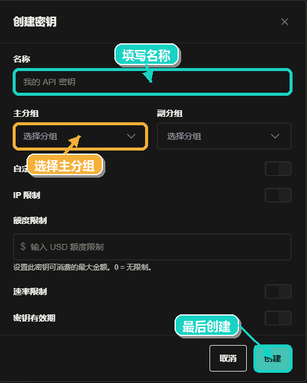

一个可访问的浏览器
用于注册中转站、下载 CC Switch，以及打开 Microsoft Store 页面。
开始前
用于注册中转站、下载 CC Switch，以及打开 Microsoft Store 页面。
API 密钥创建后建议立即保存，不要公开发送给他人。
本教程的 Codex 下载入口使用 Microsoft Store 链接，适合 Windows 用户。
进入 WaterHill 中转站网址，按照页面提示完成注册。如果已经有账号，直接登录即可。

登录后在左侧或顶部菜单中找到并点击 API 密钥。

点击创建密钥，名称可按用途填写，例如 codex-gpt。


在分组选项中选择 GPT，然后保存并复制生成的 API 密钥。

优先打开 CC Switch 官网下载。如果官网无法下载，打开 GitHub Releases 页面，选择适合 Windows 的安装包或压缩包。
打开 CC Switch，在 OpenAI 或 Codex 相关配置界面中选择添加供应商。

名称可以自己填写，API 请求地址填写 https://www.waterhill.cyou/v1，
密钥填写第一部分创建的 WaterHill API 密钥。

https://www.waterhill.cyou/v1。在供应商或模型选项中选择 gpt-5.5，保存后将该配置设为当前使用项。
打开 Microsoft Store，搜索 Codex，找到应用后点击获取或安装。
如果搜索不方便，直接打开上方 Microsoft Store 下载页，并按商店提示完成安装。
安装完成后打开 Codex，回到 CC Switch 选择刚才添加的供应商，之后 Codex 的 GPT 请求会走 WaterHill 中转站地址。
参数速查
| 字段 | 填写内容 |
|---|---|
| 名称 | 自定义，例如 WaterHill GPT |
| API 请求地址 | https://www.waterhill.cyou/v1 |
| API 密钥 | WaterHill 网站 API 密钥页面创建的密钥 |
| 分组 | GPT |
| 供应商或模型 | gpt-5.5 |
检查清单